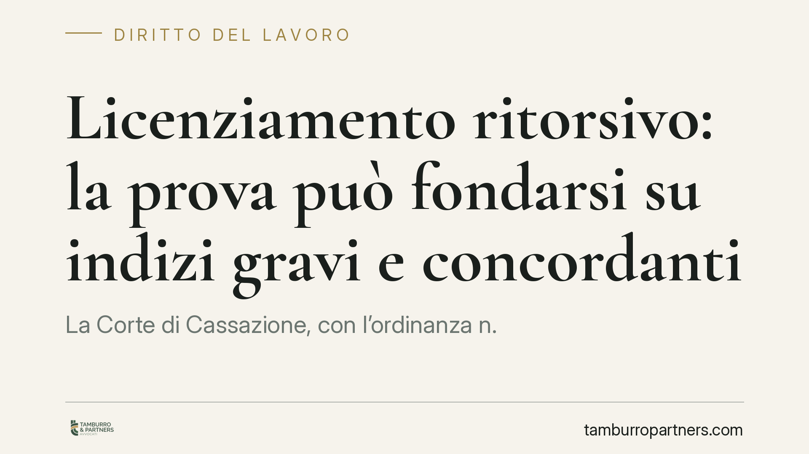

Licenziamento ritorsivo: la prova può fondarsi su indizi gravi e concordanti
La Corte di Cassazione, con l'ordinanza n. 13711 dell'11 maggio 2026, ribadisce un principio decisivo per chi contesta un recesso: il licenziamento ritorsivo può essere dimostrato anche senza prove documentali dirette, attraverso indizi gravi, precisi e concordanti. Tra questi, la sproporzione evidente tra la condotta contestata e la sanzione espulsiva assume un peso rilevante nella valutazione del giudice.

Il caso e la decisione
Il licenziamento ritorsivo è il recesso adottato dal datore di lavoro come reazione a un comportamento legittimo del dipendente: una denuncia, una rivendicazione economica, la partecipazione a un'iniziativa sindacale, la testimonianza in un procedimento. In questi casi il motivo reale del licenziamento non è quello dichiarato, ma una finalità di rappresaglia.
Con l'ordinanza n. 13711 dell'11 maggio 2026, la Sezione Lavoro della Cassazione conferma che la natura ritorsiva non deve essere provata con documenti che ne attestino in modo esplicito l'intento. Una simile prova diretta è, nella pratica, quasi impossibile da reperire: nessun datore mette per iscritto la volontà di punire il lavoratore. Per questo la Corte ammette il ricorso alla prova per presunzioni.
Inquadramento normativo
Il licenziamento ritorsivo rientra tra i licenziamenti nulli perché determinati da un motivo illecito ai sensi dell'art. 1345 del Codice civile, richiamato in materia di lavoro. Il motivo illecito, per rendere nullo il recesso, deve essere l'unico e determinante: deve cioè costituire la ragione esclusiva del provvedimento.
Sul piano probatorio, l'onere grava sul lavoratore, che deve dimostrare l'intento ritorsivo. La Cassazione chiarisce però che questo onere può essere assolto con presunzioni semplici, secondo l'art. 2729 c.c.: gli indizi devono essere gravi, precisi e concordanti. Quando il quadro indiziario è solido, spetta poi al datore fornire la prova contraria, dimostrando l'effettiva sussistenza e proporzionalità della giusta causa o del giustificato motivo addotto.
La sproporzione tra l'addebito e la sanzione espulsiva è, in questa logica, un indizio qualificato. Se a fronte di una mancanza lieve il datore reagisce con il licenziamento, la reazione anomala può rivelare che la vera ragione del recesso è altra.
Implicazioni pratiche
Per il lavoratore la pronuncia amplia i margini di tutela. Non è più necessario esibire una "prova regina": è sufficiente costruire un insieme coerente di elementi che, letti insieme, rendano più probabile l'intento ritorsivo rispetto alla motivazione ufficiale. Rilevano la vicinanza temporale tra un atto legittimo del dipendente e il licenziamento, la genericità o pretestuosità delle contestazioni, un trattamento diverso rispetto ad altri colleghi in situazioni analoghe.
Per il datore di lavoro l'ordinanza è un richiamo alla coerenza. Un procedimento disciplinare fondato su addebiti minori, seguito da una sanzione espulsiva, espone a un rischio concreto: la nullità del recesso comporta la reintegrazione nel posto di lavoro e il risarcimento del danno. La documentazione istruttoria e la proporzionalità della misura diventano quindi elementi decisivi da presidiare.
Va ricordato che la nullità per motivo ritorsivo assicura la tutela più forte prevista dall'ordinamento, applicabile a prescindere dalle dimensioni dell'impresa e dalla data di assunzione.
Cosa fare in concreto
- Conservate ogni documento utile a ricostruire la sequenza dei fatti: contestazioni disciplinari, comunicazioni interne, e-mail, richieste economiche o segnalazioni precedenti al licenziamento.
- Annotate la cronologia degli eventi rilevanti, evidenziando la distanza temporale tra un vostro atto legittimo (denuncia, reclamo, adesione sindacale) e il provvedimento espulsivo.
- Raccogliete elementi comparativi: verificate se altri colleghi, per condotte simili, abbiano ricevuto sanzioni più lievi.
- Valutate la proporzionalità della sanzione rispetto all'addebito contestato: una risposta manifestamente sproporzionata è un indizio da valorizzare.
- Rivolgetevi tempestivamente a un professionista: l'impugnazione del licenziamento è soggetta a termini di decadenza stringenti, il cui mancato rispetto preclude ogni tutela.
Consigliamo di agire senza attendere: la solidità del quadro indiziario si costruisce prima del giudizio, con una raccolta ordinata e documentata degli elementi disponibili.
---
Contributo informativo a cura di Tamburro & Partners – Avv. Giuseppe Tamburro. Non costituisce parere legale.
Ogni storia di lavoro ha i suoi tempi.
Se gestisci HR e vuoi un confronto su contenzioso, ispezioni o licenziamenti, scrivi allo studio. Ti rispondiamo entro un giorno lavorativo.